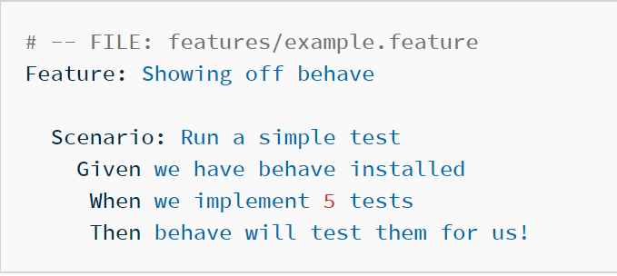

Web UI behave automation
introduce by: Owen Kang
Agenda
- 01 介绍
- 02 配置
- 03 How it works?
- 04 关键架构
- 05 Q & A
01 介绍
- 问题陈述
- 解决方案
1 . 1 问题陈述
1 . 1 . 1 手工工作流痛点
- 1. 重复的 操作
- 2. 测试场景 是复杂多样的
- 3. 创建测试数据 手动操作会花费很多时间
1 . 2 解决方案
1 . 2 . 1 简要介绍
behave-automation 使用以自然语言风格编写的测试，并由Python代码进行备份。 用户故事是由Gherkin语言组织的，这是一种自然语言风格的标签 在功能。
1 . 2 . 2 Testing stack
1 . 2 . 3 Technology Stack
1 . 2 . 4 框架背景
- What is Behavior-driven development?
- What is gherkin?
- What is behave?
About Behavior-driven development
BDD, 行为驱动开发(或 BDD), 是一种敏捷的软件开发技术，鼓励开发人员之间的协作， 软件项目中的QA和非技术或业务参与者 BDD, 重点在于通过讨论获得对所需软件行为的清晰理解 与利益相关者。 它通过用一种非程序员可以阅读的自然语言编写测试用例来扩展TDD。 行为驱动的开发人员使用他们的本地语言与无处不在的 域驱动的语言 设计要描述代码的目的和好处。这允许开发人员 专注于为什么要创建代码， 而不是技术细节，并尽量减少技术语言之间的翻译 在其中编写代码和 由业务、用户、涉众、项目管理等使用的领域语言。
About Gherkin – BDD Language
Gherkin 是一种语言, 用于编写特性、场景和步骤. Gherkin 目的是帮助我们写出具体的要求。
为了理解我们所说的具体要求, 考虑以下 Keywords −
- Feature
- Rule
- Example (or Scenario)
- Given, When, Then, And, But (steps)
- Background
- Scenario Outline (or Scenario Template)
- Examples
About behave
behave 使用以自然语言风格编写的测试, 并由Python代码进行备份. 为了理解我们所说的具体需求, 考虑下面的例子 :
Now make a directory called “features/”. In that directory create a file called “example.feature” containing:
02 配置
- 配置准备
- 启动运行
2 . 1 配置准备
- Python3
- behave
- selenium
2 . 2 启动运行
- 为项目设置虚拟环境
- 安装依赖包
- 运行命令: behave -i xxx.feature
2 . 2 . 1 为项目设置虚拟环境
通过IDE - Pycharm为项目设置虚拟环境
- 确保您已经在计算机上下载并安装了Python3。
- 通过按'Ctrl+Alt+S'打开设置，并在project Interpreter中选择项目名称。 点击 齿轮图标，并选择添加。
- 在“添加Python解释器”对话框的左侧窗格中，选择Virtualenv Environment。 的 以下操作取决于之前是否存在虚拟环境。
- 单击OK完成任务。
通过virtual (Windows)设置虚拟环境
- 打开项目文件路径，命令行: cd project_folder
- 创建虚拟环境，命令行: virtualenv env -p Pythonx.x
- 使用虚拟环境，命令行: env\Scripts\activate.bat
- 你可以去激活它，命令行: deactivate
2 . 2 . 2 安装依赖包
- Install requirements, command: pip install -r requirements.txt
2 . 2 . 3 install a '.pth' file
- os.environ["username"] = "xxx"
- os.environ["password"] = "xxx"
[_set_envs.pth]
import os;
os.environ["password"] = "xxx";
os.environ["username"] = "xxx";
os.environ["gp_password"] = "xxx";
os.environ["gp_username"] = "xxx"
2 . 2 . 4 Run 'xxx.feature'
Type on the command line: behave -i xxx.feature
2 . 2 . 5 About behave arguments
usage: behave [options] [ [DIR|FILE|FILE:LINE] ]+
Run a number of feature tests with behave.
positional arguments:
paths Feature directory, file or file location (FILE:LINE).
optional arguments:
-h, --help show this help message and exit
-c, --no-color Disable the use of ANSI color escapes.
--color Use ANSI color escapes. This is the default behaviour.
This switch is used to override a configuration file
setting.
-d, --dry-run Invokes formatters without executing the steps.
-D NAME=VALUE, --define NAME=VALUE
Define user-specific data for the config.userdata
dictionary. Example: -D foo=bar to store it in
config.userdata["foo"].
-e PATTERN, --exclude PATTERN
Don't run feature files matching regular expression
PATTERN.
-i PATTERN, --include PATTERN
Only run feature files matching regular expression
PATTERN.
--no-junit Don't output JUnit-compatible reports.
--junit Output JUnit-compatible reports. When junit is
enabled, all stdout and stderr will be redirected and
dumped to the junit report, regardless of the "--
capture" and "--no-capture" options.
--junit-directory PATH
Directory in which to store JUnit reports.
-f FORMAT, --format FORMAT
Specify a formatter. If none is specified the default
formatter is used. Pass "--format help" to get a list
of available formatters.
--steps-catalog Show a catalog of all available step definitions. SAME
AS: --format=steps.catalog --dry-run --no-summary -q
-k, --no-skipped Don't print skipped steps (due to tags).
--show-skipped Print skipped steps. This is the default behaviour.
This switch is used to override a configuration file
setting.
--no-snippets Don't print snippets for unimplemented steps.
--snippets Print snippets for unimplemented steps. This is the
default behaviour. This switch is used to override a
configuration file setting.
-m, --no-multiline Don't print multiline strings and tables under steps.
--multiline Print multiline strings and tables under steps. This
is the default behaviour. This switch is used to
override a configuration file setting.
-n NAME, --name NAME Only execute the feature elements which match part of
the given name. If this option is given more than
once, it will match against all the given names.
--no-capture Don't capture stdout (any stdout output will be
printed immediately.)
--capture Capture stdout (any stdout output will be printed if
there is a failure.) This is the default behaviour.
This switch is used to override a configuration file
setting.
--no-capture-stderr Don't capture stderr (any stderr output will be
printed immediately.)
--capture-stderr Capture stderr (any stderr output will be printed if
there is a failure.) This is the default behaviour.
This switch is used to override a configuration file
setting.
--no-logcapture Don't capture logging. Logging configuration will be
left intact.
--logcapture Capture logging. All logging during a step will be
captured and displayed in the event of a failure. This
is the default behaviour. This switch is used to
override a configuration file setting.
--logging-level LOGGING_LEVEL
Specify a level to capture logging at. The default is
INFO - capturing everything.
--logging-format LOGGING_FORMAT
Specify custom format to print statements. Uses the
same format as used by standard logging handlers. The
default is "%(levelname)s:%(name)s:%(message)s".
--logging-datefmt LOGGING_DATEFMT
Specify custom date/time format to print statements.
Uses the same format as used by standard logging
handlers.
--logging-filter LOGGING_FILTER
Specify which statements to filter in/out. By default,
everything is captured. If the output is too verbose,
use this option to filter out needless output.
Example: --logging-filter=foo will capture statements
issued ONLY to foo or foo.what.ever.sub but not foobar
or other logger. Specify multiple loggers with comma:
filter=foo,bar,baz. If any logger name is prefixed
with a minus, eg filter=-foo, it will be excluded
rather than included.
--logging-clear-handlers
Clear all other logging handlers.
--no-summary Don't display the summary at the end of the run.
--summary Display the summary at the end of the run.
-o FILE, --outfile FILE
Write to specified file instead of stdout.
-q, --quiet Alias for --no-snippets --no-source.
-s, --no-source Don't print the file and line of the step definition
with the steps.
--show-source Print the file and line of the step definition with
the steps. This is the default behaviour. This switch
is used to override a configuration file setting.
--stage STAGE Defines the current test stage. The test stage name is
used as name prefix for the environment file and the
steps directory (instead of default path names).
--stop Stop running tests at the first failure.
-t TAG_EXPRESSION, --tags TAG_EXPRESSION
Only execute features or scenarios with tags matching
TAG_EXPRESSION. Pass "--tags-help" for more
information.
-T, --no-timings Don't print the time taken for each step.
--show-timings Print the time taken, in seconds, of each step after
the step has completed. This is the default behaviour.
This switch is used to override a configuration file
setting.
-v, --verbose Show the files and features loaded.
-w, --wip Only run scenarios tagged with "wip". Additionally:
use the "plain" formatter, do not capture stdout or
logging output and stop at the first failure.
-x, --expand Expand scenario outline tables in output.
--lang LANG Use keywords for a language other than English.
--lang-list List the languages available for --lang.
--lang-help LANG List the translations accepted for one language.
--tags-help Show help for tag expressions.
--version Show version.
03 How it works?
3 . 1 Features
Features , 是由场景组成的。它们可以有一个描述，一个背景和一组 标签。控件中的代码块 相同的文件或来自不同的文件
3 . 2 场景和场景概述
Scenario 被引入执行 的步骤 以事务性的方式执行，只执行一次。
Scenario Outline , 提供了从基于Gherkin的特性文件执行循环的灵活性。
3 . 3 Keywords
它通常包含以下关键词:
- Background
- Scenario Outline
- Given (some context)
- When (some action is carried out)
- Then (a particular set of observable consequences should obtain)
- And/But (执行相同的操作 和前面的步骤一样)
3 . 4 Steps
Steps , 场景中使用的步骤是在“steps”目录中的Python文件中实现的。 你可以随意命名它们，只要它们使用python *.py文件扩展名。 你不需要告诉行为使用哪些-它会使用所有的。
Feature: Test Client Billing case assignment work flow (PTid: #167422955)
Background: Create Client Billing cases on Account and check work flow
Scenario Outline: Client Billing cases Test
Given login salesforce
And "<seq>" - Create a Lead
And Exist lead generate vendor id
And Exist lead with vendor id convert to Account
When Create a contract with "<tkww_product_family>" on inbound case "<related_account>" Account
And create "<related_account>" Inbound case on new account
And close first case with "<exist_case_status>"
And close second case with "<exist_case_status>"
And create "<related_account>" Inbound case in tab
Then Verify the Inbound case with "<case_owner>"
Examples:
| seq | related_account | tkww_product_family | case_owner | exist_case_status |
| 1 | no | Listings | Account Strategy | no |
| 2 | yes | Listings | | no |
| 3 | have case | Listings | exist case owner | open |
| 4 | have case | Listings | exist case owner | close |
3 . 5 Page object
Page Object Model是一种为web UI元素创建对象存储库的设计模式。在这种模式下 应用程序中的每个网页， 应该有相应的页类。这个Page类将找到该web的WebElements page，也包含page方法 在这些WebElements上执行操作。
3 . 5 . 1 Page object Code sample
from selenium.webdriver.common.by import By
from .abstract_base_page import Page, Focus
from selenium.webdriver.support.ui import WebDriverWait
from selenium.webdriver.support import expected_conditions as EC
class LoginPageLocators(object):
username_field = (By.ID, "username")
# username_field = "username"
password_field = (By.ID, "password")
login_btn = (By.ID, "Login")
# login_btn = "Login"
login_as_ae = (By.NAME, "login")
user_menu_btn = (By.ID, "userNavButton")
logout_btn = (By.XPATH, "//*[@id='userNav-menuItems']/a[4]")
current_user = (By.XPATH, "//*[@id='phHeader']/tbody/tr/td[3]/div/div[1]/div/span[1]")
class LoginPage(Page):
@property
def __login_username_field(self):
""" Return "Username" web element in Login page """
return self.driver.find_element(*LoginPageLocators.username_field)
def fill_login_email(self, username):
"""Sends keys to "Username" element.
:Args:
- username: The keys to send.
"""
self.set_text(username, self.__login_username_field)
@property
def __login_password_field(self):
""" Return "Password" web element in Login page """
return self.driver.find_element(*LoginPageLocators.password_field)
def fill_login_password(self, password):
"""Sends keys to "Password" element.
:Args:
- password: The keys to send.
"""
self.set_text(password, self.__login_password_field)
@property
def __login_button(self):
""" Return "Log In to Sandbox" web element in Login page """
return self.driver.find_element(*LoginPageLocators.login_btn)
def click_login_btn(self):
"""Click "Log In to Sandbox"."""
self.click_element(self.__login_button)
@Focus.screenshot
def login(self, username, password):
self.fill_login_email(username)
self.fill_login_password(password)
self.click_login_btn()
self.wait(2)
def login_as_user(self, user):
user_url = self.get_user_url(user)
self.open(user_url)
self.wait(2)
self.click_element(*LoginPageLocators.login_as_ae)
self.wait(2)
3 . 6 Steps Definitions
# -*- coding: utf-8 -*-
import os
from behave import *
@given('login salesforce')
def set_up(context):
context.login_obj.open("https://test.salesforce.com")
context.login_obj.login(os.environ["username"], os.environ["password"])
@given(u'"{seq}" - Create a Lead')
def create_lead(context, seq):
context.tab_obj.click_leads_tab()
context.edit_lead_obj.click_new_lead_btn()
context.edit_lead_obj.click_continue_btn()
context.edit_lead_obj.fill_company_name_field(seq + "+" + context.test_data["Lead"]["company_name"] + "+" + "12061")
context.edit_lead_obj.fill_phone_num_field(context.test_data["Lead"]["business_phone"])
context.edit_lead_obj.fill_first_name_field(context.test_data["Lead"]["contact_first_name"])
context.edit_lead_obj.fill_last_name_field(context.test_data["Lead"]["contact_last_name"])
context.edit_lead_obj.fill_email_field(context.test_data["Lead"]["company_for_email"])
context.edit_lead_obj.select_lead_create_source(context.test_data["Lead"]["lead_source"])
context.edit_lead_obj.select_lead_category(context.test_data["Lead"]["lead_category"])
context.edit_lead_obj.fill_street_field(context.test_data["Lead"]["biz_street"])
context.edit_lead_obj.fill_city_field(context.test_data["Lead"]["biz_city"])
context.edit_lead_obj.fill_state_field(context.test_data["Lead"]["biz_state"])
context.edit_lead_obj.fill_zip_field(context.test_data["Lead"]["biz_zip"])
context.edit_lead_obj.click_save_lead_btn()
@given(u'Exist lead generate vendor id')
def lead_generate_vendor_id(context):
context.lead_obj.click_generate_vendor_id_btn()
context.lead_obj.refresh()
lead_vendor_id = context.lead_obj.get_lead_vendor_id()
print("*** WW Vendor Id = " + lead_vendor_id)
@given(u'Exist lead with vendor id convert to Account')
def lead_convert_account(context):
context.convert_lead_obj.click_convert_button()
context.convert_lead_obj.wait_for_convert_status_load()
context.convert_lead_obj.click_dont_create_opp_checkbox()
context.convert_lead_obj.fill_task_subject_field(context.test_data["Lead"]["title"])
context.convert_lead_obj.click_convert_due_date_txt()
context.convert_lead_obj.select_action_type("Admin Notes")
context.convert_lead_obj.click_continue_conversion_button()
acc_page = context.convert_lead_obj.get_current_link()
print("*** Account Link = " + acc_page)
@then(u'Verify the "{seq}" Onboarding Case assigned to "{assignment_2}"')
def onboarding_case_owner_verification(context, seq, assignment_2):
if seq == "1" or seq == "3":
first_case_record_type = context.account_obj.get_first_case_record_type()
expect_onboarding_case_record_type = "Onboarding"
assert first_case_record_type == expect_onboarding_case_record_type
first_case_owner = context.account_obj.get_first_case_owner()
expect_onboarding_case_owner = assignment_2
print(first_case_record_type)
print(first_case_owner)
print(assignment_2)
assert first_case_owner == expect_onboarding_case_owner
elif seq == "2" or seq == "4":
actual_account_case_record_display = context.account_obj.get_case_record_display()
expect_account_case_record_display = "No records to display"
assert actual_account_case_record_display == expect_account_case_record_display
3 . 7 environment.py
- Context
- 环境控制
3 . 7 . 1 Context
Context , 您可能已经注意到了传递的“context”变量。那是个聪明的地方，你 和行为可以存储信息 分享。它在三个级别上运行，根据行为自动管理。
当 behave 启动到一个新特性或场景，它向上下文添加了一个新层， 允许新的活动级别添加新的值，或覆盖以前定义的值 活动的持续时间。这些可以被认为是 范围。
3 . 7 . 2 环境控制
environment.py 模块可以定义在前后运行的代码 测试过程中的某些事件:
- before_step(context, step), after_step(context, step) Notes: These run before and after every step.
- before_scenario(context, scenario), after_scenario(context, scenario) Notes: These run before and after each scenario is run.
- before_feature(context, feature), after_feature(context, feature) Notes: These run before and after each feature file is exercised.
- before_tag(context, tag), after_tag(context, tag) Notes: These run before and after a section tagged with the given name. They are invoked for each tag encountered in the order they’re found in the feature file. See controlling things with tags.
- before_all(context), after_all(context) Notes: These run before and after the whole shooting match.
3 . 7 . 2 . 1 使用fixture初始化浏览器
我们需要为每个场景或特性分配一个@fixture标记 应该可以访问一个网页。 这不是一个好的选择。此外，如果我们想要切换到另一个浏览器呢?我们需要 检查一下所有的功能 修改@fixture。浏览器每次? !这个问题可以通过安装夹具来解决 Before_feature (context)函数来自environment.py。 是这样的:
def before_all(context):
use_fixture(selenium_browser_chrome, context)
# -- HINT: CLEANUP-FIXTURE is performed after after_all() hook is called.
def before_feature(context, feature):
if 'Test Asset collection case assignment work flow' \
or 'Test Onboarding case assignment work flow' \
or 'Test Client Billing case assignment work flow' \
or 'Test VIP work flow' \
or 'Test Sales Process work flow' \
in str(feature):
print('====Before Feature====' + str(feature))
use_fixture(init_page_obj, context)
def after_feature(context, feature):
if 'Test Asset collection case assignment work flow (PTid: #167422940)' \
or 'Test Onboarding case assignment work flow' \
or 'Test Client Billing case assignment work flow' \
or 'Test VIP work flow' \
or 'Test Sales Process work flow' \
in str(feature):
print('====After Feature====' + str(feature))
3 . 7 . 2 . 2 使用 Fixture
fixture可以通过调用use_fixture()函数来使用。use_fixture()调用 执行setup - fixture部分并返回安装结果。此外，它确保了CLEANUP-FIXTURE Part稍后在删除当前上下文层时调用。因此，任何手动清理处理 在after_tag()中钩子是不必要的。
def before_all(context):
use_fixture(selenium_browser_chrome, context)
# -- HINT: CLEANUP-FIXTURE is performed after after_all() hook is called.
def before_feature(context, feature):
if 'Test Asset collection case assignment work flow' \
or 'Test Onboarding case assignment work flow' \
or 'Test Client Billing case assignment work flow' \
or 'Test VIP work flow' \
or 'Test Sales Process work flow' \
in str(feature):
print('====Before Feature====' + str(feature))
use_fixture(init_page_obj, context)
3 . 7 . 2 . 3 用标签控制东西
你也可以 “tag” 你的部分特性文件。在最简单的层面上 允许行为有选择地检查您的特性集的部分。
@ac_case
Feature: Test Asset collection case assignment work flow (PTid: #167422940)
Background: Create Asset collection cases on Account and check assignment work flow
Scenario Outline: Asset collection case assignment work flow Test
Given login salesforce
When "<seq>" Create a "<manual_vip>" status and "<account_as>" Account
And Create a "<onboarding_case>"
And Create a exist "<ac_case>" - "<ac_case_pf>" Ac Case
And Create a "<product_family>" - "<contract_date>" Ac Case
Then Verify the "<seq>" Ac Case assigned to "<assignment_2>"
3 . 7 . 2 . 4 使用标签
然后运行 'behave --tags=ac_case' 将只运行标记为 @ac_case. 如果你想运行除了@ac_case的那些，那么你可以运行 'behave --tags="not @ac_case"'.
3 . 7 . 3 environment.py Code sample
@fixture
def init_page_obj(context):
context.login_obj = PageFactory.get_page_object("login", context.browser)
context.tab_obj = PageFactory.get_page_object("tab", context.browser)
context.edit_lead_obj = PageFactory.get_page_object("edit lead", context.browser)
context.lead_obj = PageFactory.get_page_object("lead", context.browser)
context.edit_account_obj = PageFactory.get_page_object("edit account", context.browser)
context.account_obj = PageFactory.get_page_object("account", context.browser)
context.contact_obj = PageFactory.get_page_object("contact", context.browser)
context.edit_contract_obj = PageFactory.get_page_object("edit contract", context.browser)
context.edit_case_obj = PageFactory.get_page_object("edit case", context.browser)
context.convert_lead_obj = PageFactory.get_page_object("convert lead", context.browser)
def before_all(context):
use_fixture(selenium_browser_chrome, context)
# -- HINT: CLEANUP-FIXTURE is performed after after_all() hook is called.
def before_feature(context, feature):
if 'Test Asset collection case assignment work flow' \
or 'Test Onboarding case assignment work flow' \
or 'Test Client Billing case assignment work flow' \
or 'Test VIP work flow' \
or 'Test Sales Process work flow' \
in str(feature):
print('====Before Feature====' + str(feature))
use_fixture(init_page_obj, context)
def after_feature(context, feature):
if 'Test Asset collection case assignment work flow (PTid: #167422940)' \
or 'Test Onboarding case assignment work flow' \
or 'Test Client Billing case assignment work flow' \
or 'Test VIP work flow' \
or 'Test Sales Process work flow' \
in str(feature):
print('====After Feature====' + str(feature))
def before_scenario(context, scenario):
if 'Asset collection case assignment work flow Test' \
or 'Onboarding cases assignment Test' \
or 'Client Billing cases Test' \
or 'VIP Test' \
or 'Sales Process Test' \
in str(scenario):
print('====Before scenario====' + str(scenario))
use_fixture(test_data, context)
def after_scenario(context, scenario):
if 'Asset collection case assignment work flow Test' \
or 'Onboarding cases assignment Test' \
or 'Client Billing cases Test' \
or 'VIP Test' \
or 'Sales Process Test' \
in str(scenario):
print('====after scenario====' + str(scenario))
3 . 8 Put test_data in @fixture
#!/usr/bin/python3
# -*- coding: utf-8 -*-
from behave import fixture, use_fixture
from data_objects.test_data_builder import get_test_data
from page_objects.PageFactory import PageFactory
from page_objects.DriverFactory import DriverFactory
@fixture
def selenium_browser_chrome(context):
# -- HINT: @behave.fixture is similar to @contextlib.contextmanager
DriverFactory.browser = 'chrome'
# in gz network, using proxy selenium instance
context.browser = DriverFactory().get_proxy_driver("172.26.0.17:3128")
# if in US network, using this instance
# context.browser = DriverFactory.get_web_driver()
yield context.browser
# -- CLEANUP-FIXTURE PART:
# context.browser.quit()
@fixture
def test_data(context):
"""Register the driver with Page"""
context.test_data = get_test_data()
@fixture
def init_page_obj(context):
context.login_obj = PageFactory.get_page_object("login", context.browser)
context.tab_obj = PageFactory.get_page_object("tab", context.browser)
context.edit_lead_obj = PageFactory.get_page_object("edit lead", context.browser)
context.lead_obj = PageFactory.get_page_object("lead", context.browser)
context.edit_account_obj = PageFactory.get_page_object("edit account", context.browser)
context.account_obj = PageFactory.get_page_object("account", context.browser)
context.contact_obj = PageFactory.get_page_object("contact", context.browser)
context.edit_contract_obj = PageFactory.get_page_object("edit contract", context.browser)
context.edit_case_obj = PageFactory.get_page_object("edit case", context.browser)
context.convert_lead_obj = PageFactory.get_page_object("convert lead", context.browser)
04 Key Takeaways
- 使用“页面对象模型”创建对象 存储库的web UI元素。 我们可以根据相应的页面进行调用。的映射关系 定义的步骤。
- 将test_data放入@fixture中，这样我们就可以使用test 没有定义的全局数据
05 Q & A